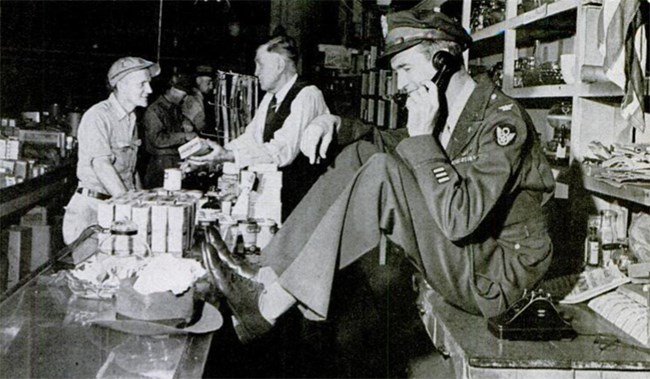
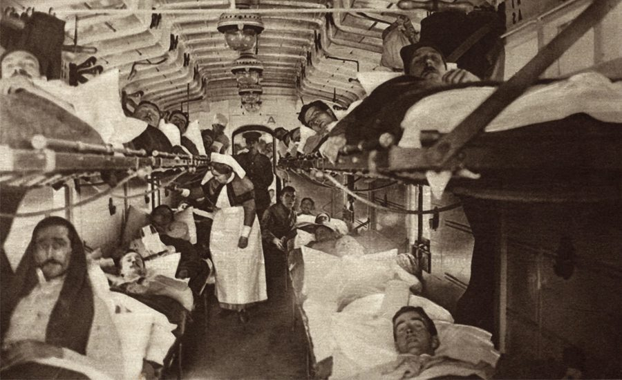
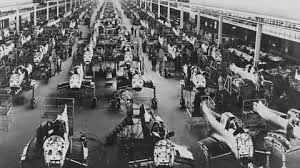
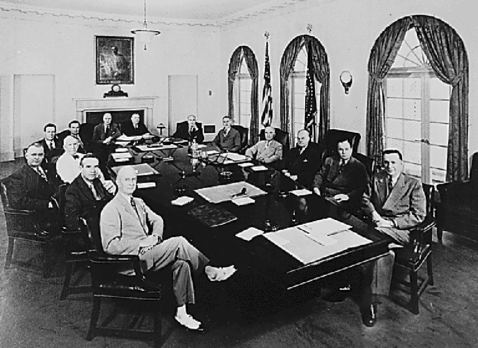

Both World Wars completely changed the world’s economies. After World War I, many countries struggled with debt, inflation, and rebuilding destroyed cities. Germany faced huge reparations that damaged its economy and caused anger. After World War II, the economic impact was even bigger: Europe and Asia had to rebuild entire industries, which led to large recovery programs like the Marshall Plan. The United States became the strongest economy in the world, while other countries rebuilt slowly. The wars also pushed nations to modernize, create new jobs, and change the way they used money and resources.
Health systems changed dramatically because of the wars. World War I introduced new medical techniques, like improved surgery, blood transfusions, and treatment for infections. However, it also caused massive physical injuries and mental trauma known as “shell shock.” World War II advanced medicine even further with antibiotics like penicillin, better burn treatments, and improved field hospitals. The wars also increased awareness of mental health, nutrition, and rehabilitation. After the conflicts, many countries modernized their hospitals and created stronger public health systems.
Industry grew and transformed because of both wars. World War I introduced mass production of weapons, airplanes, tanks, and chemicals. Factories switched from making everyday items to making war supplies. In World War II, industrial production expanded even more: countries created advanced technology such as radar, code machines, jet engines, and nuclear power. Women joined the workforce in huge numbers to replace men fighting in battle. After the wars, these industrial advances became part of everyday life and helped modernize the world.
Politically, the world was transformed after both wars. World War I ended old empires and created new nations, but also left anger and instability that allowed dictators like Hitler and Mussolini to rise. World War II destroyed fascist governments and created two superpowers: the United States and the Soviet Union. Their rivalry started the Cold War. The United Nations was formed to keep peace and prevent new conflicts. Many countries also gained independence from colonial rule. Politics changed completely, moving toward modern systems and international cooperation.
Together, World War I and World War II shaped the modern world. They changed borders, governments, technology, medicine, economies, and global relationships. The wars ended monarchies, defeated dictatorships, and created new international organizations. They led to major inventions, better rights for women, advances in science, and the idea that countries must work together to avoid future global conflicts. Without these wars, the world today would look very different.